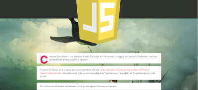

Ikodi - Le Blog

Réalisé avec Wordpress, des articles sur PHP, JS, Apache ...
Un nouvel article chaque semaine, essentiellement des solutions
à des problèmes de développement rencontrés en débutant.
Ikodi - Le site WordPress

Réalisé avec Wordpress, un site basique de démonstration avec quelques exemples de pages WordPress.